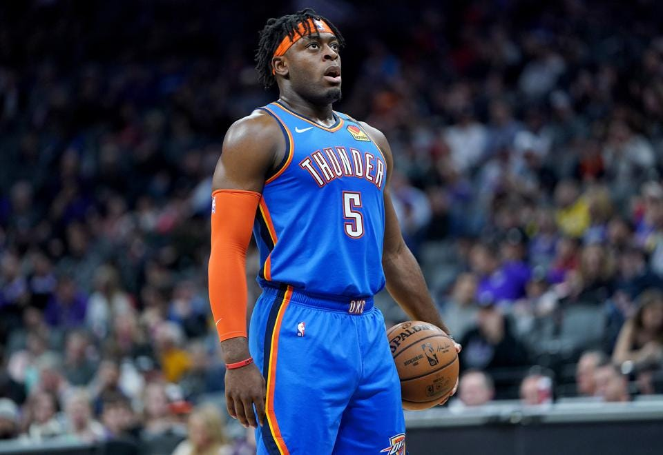

The 3 Point Revolution
a 3px line creation
One of the most publicized transformations in the history of the NBA, the rise of analytics, has had a polarizing and profound impact on the way the game of basketball is played today. All 30 teams in the league now boast analytics personnel or departments—people sitting behind computers, crunching numbers, and impacting the outcome of games in their own uniquely cerebral way. But how has this wave of analytics actually impacted the way the game is played—have team strategies changed? Are certain types of shots more or less common now? Let’s dive in and find out.

Charles Barkley—NBA Hall of Famer, Host of NBA on TNT, and an outspoken opponent of the analytics movement. Art Credit: Aaron Dana
A basic breakdown of NBA shot attempts over time highlights the uptick in three pointers, particularly from 2000 to 2020. Let's now take a deeper dive into that transformation.
* Only includes 2020 and 2021 seasons
When the frequency of one type of shot rises, the frequency of another must fall. Long mid-range shots—favorites of legends of the sport like Kobe Bryant and Allen Iverson—have been largely discarded, swapped for three pointers that are just a few steps further from the basket, but 50% higher in value. Use your mouse to brush over the chart on the right to control the time frame of the left-hand chart.
As you use the slider to explore the data, notice how the long 2-pointers (especially near the baseline) disappear, and the shots bifurcate into mostly 3s and layups. Click the buttons to see some interesting players and trends we've highlighed, or explore your favorite team or player's shot selection!
Use the various filters below to explore how shot selection has changed between the beginning of the 21st century and now. Each line represents shot attempts from a particular distance, where a thicker line means a higher percentage of the filtered shots are from that distance. Notice how thin the lines between the paint and three point line (23 feet) are when looking just at the recent seasons!
Regular Season
So the league as a whole is embracing the three point shot like never before and casting aside the once celebrated long-two. But how does this change look at the individual level? Let's start with the league's best. The players featured in the next chart are superstars, considered the best-of-the-best of their respective eras. We have organized these players into four groups—the 1980s, 1990s, 2000s, and 2010s—based on when they were drafted and/or achieved their peak level of play. Let's see how they stack up to each other when it comes to three point shot selection.
Decade-by-decade, the three point shot has become more popular among the league's best players. But what is particularly startling is the rate at which players of the modern era are taking them compared to past generations. Players like Steph Curry and James Harden have barely scratched the career longevitiy of a Kobe Bryant, but have already far surpassed him when it comes to total three pointers taken. There are of course exceptions to this trend. Players such as Giannis Antetokounmpo and Anthony Davis show that you can still be a superstar in today's league while doing most of your damage inside the three point line.
Use the position filter to compare players across the same position. The trend is consistent across the board: superstar players of today who are just halfway into their careers have already launched more threes than many of their peers from past eras. The trend for bigs is especially eye-opening: even skilled post players like Joel Embiid and Nikola Jokic take a steady diet of threes just by nature of the way the game is played today. A few outliers aside, most bigs in the 90s and 2000s would rarely ever attempt a three.
Limiting our analysis to the ~10 best players in the league in a few different eras does not truly capture how extreme the three point revolution has been. To do that, we must look at the rest of the the league—average NBA players who aren't the stars of the show.
For example, Luguentz Dortz (above), a young defensive specialist and below average three point shooter, is taking more three point shots per game this season than Reggie Miller, the 3rd all-time leader in three point makes, did in any season of his 18-year career.
Think guys like Larry Bird, Ray Allen, and Reggie Miller would frequently launch the ball from deep? Well, you might want to re-think that notion as we compare them to some of the current league’s average Joes. What were once historic rates of three point shot attempts are now being outdone by perennial bench players.
In the 90s and 2000s, if you wanted to take a bunch of threes, you had to be an excellent shooter. The same cannot be said anymore in this era of basketball. Average shooters are hoisting up as many, or more, shots than the likes of Ray Allen and Reggie Miller. When looking at the chart above, keep in mind that the difference between a ~40% and ~35% three point shooter is considered substantial by NBA standards.
Conclusion
So what can be done? The league-wide shift towards shooting more threes was the result of a basic distortion in incentives: instead of shooting the midrange, players could simply shoot the ball from a few steps further back for a 50% higher payoff. Once teams and players truly grasped this fact, they all started exploiting it. Perhaps now we need a new change in incentives. For instance, some have suggested that the three point line could be pushed further back, so the shot becomes more challenging and less efficient. Or perhaps NBA officiating should begin to loosen up on the perimeter, allowing defenses to disrupt three point attempts more effectively. The options are numerous and the NBA shouldn't shy away from embracing major change. After all, the introduction of the three point line in 1979 was itself one of the most radical changes in all of sports.
Data and Inspiration: basketballreference.com, NBA Stat API, Sprawlball by Kirk Goldsberry